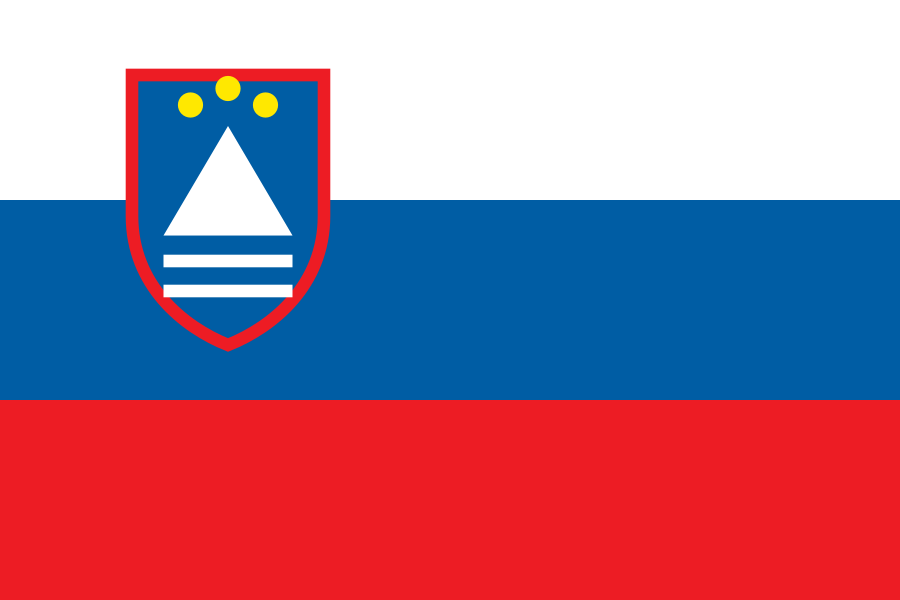

Slovenia is the clearest case of a declared treaty termination with actual closure: the government initiated termination on 22 March 2022 and the centre in Ljubljana closed on 8 April 2022. What remains open is the immediate effect under international law – on a purely ordinary application of the treaty clause the next period would end on 19 September 2026. And in Maribor a partner network continues.
| Institution | Russian Science and Culture Centre Ljubljana |
|---|---|
| Agreement | Signed 22 March 2011 in Brdo pri Kranju |
| Ratification | National Assembly July 2011; publication in Official Gazette No 66/2011 on 22 August 2011 |
| Entry into force | 19 September 2011 under Article 17 – the date is expressly stated in the official Russian publication portal |
| Counterpart | The agreement also provided for a Slovenian centre in Russia. Slovenia never opened it |
| Termination | Government decision of 22 March 2022; approval by the foreign affairs committee on 24 March 2022 with 9 votes in favour, 2 abstentions and 1 against |
| Note | According to media reports citing the foreign ministry, the diplomatic note was delivered on 1 April 2022 and the ministry treated the termination as effective from that day. The note itself was not publicly verified |
| Closure | Deadline of 15 April 2022; actual closure on 8 April 2022. Four Russian employees were to leave |
| End of treaty | Open. On a purely ordinary application of Article 17 the next period would end on 19 September 2026. No official announcement of the date of termination under international law was found |
| To distinguish | The Ruski dom in Maribor is a local institute and Russkiy Mir partner (operator: Zavod Ruski dom, Ulica talcev 1) – not the official centre in Ljubljana. It still lists courses, a library and events |
The Slovenian case calls for a threefold distinction. Physical closure on 8 April 2022 – documented. Declaration of termination from 22 March, note delivered on 1 April 2022 according to the ministry – documented, though the note itself was not publicly verified. End of the treaty under international law – not documented; on an ordinary application of Article 17 it would be 19 September 2026. Reading rule: “Open” means the statement is not documented in the public sources examined. It is not proof of the contrary. EU listing, national enforcement, political non-cooperation, treaty termination and actual closure of operations are assessed separately.
The intergovernmental agreement of 22 March 2011 is fully documented: ratification act and full text in Official Gazette No 66/2011, entry into force on 19 September 2011 under Article 17. It structures status, staff privileges, taxes, customs and use of premises precisely.
Article 17 also governs duration and termination. That is exactly where the open question lies: the foreign ministry treated the termination as effective from 1 April 2022. The precise justification under international law for that immediate effect despite Article 17 was not found.
Not publicly verified are the note of 1 April 2022, any Russian reply and any official announcement of the date of termination under international law. On a purely ordinary application of Article 17 the next period would end on 19 September 2026.
Slovenia is the only one of the 18 states examined here to have both declared termination and brought about actual closure. The centre closed on 8 April 2022, a week before the deadline set.
Separately, on 5 April 2022 Slovenia reduced the staff of the Russian embassy under Article 11 of the Vienna Convention. The two measures must be kept apart.
What remains open is the ownership of the property and the winding up of the tenancy or ownership arrangements of the Ljubljana centre, as well as any Slovenian sanctions enforcement against the still active Maribor partner network of the listed Russkiy Mir Foundation.
Slovenia demonstrates that a bilateral cultural centre treaty can structure status, staff privileges, taxes, customs and use of premises precisely – and that a political closure then becomes a treaty question. For Germany the first step would be to examine which termination, suspension or countermeasure clauses the particular treaty contains and whether general treaty law applies.
At the same time the case shows the limit of clarity: the physical closure is documented and so is the declaration of termination – but not the date of termination under international law. Saying “terminated and ended” in one breath skips an open legal question.
And Maribor shows that terminating the official structure does not automatically remove a parallel NGO and foundation network. The official centre is closed; the partner network still lists courses, a library and events by its own account.
Where the individual document could be identified unambiguously, the link points straight to it – for example to official gazettes, treaty publications and parliamentary documents. For the remaining items the underlying research file records only publisher, title and date, not the full document address; there the link points to the source domain on record. Those deep links are expressly outstanding and will be added once the citation is unambiguous.